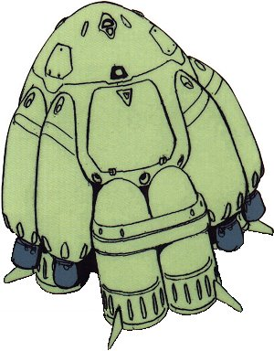
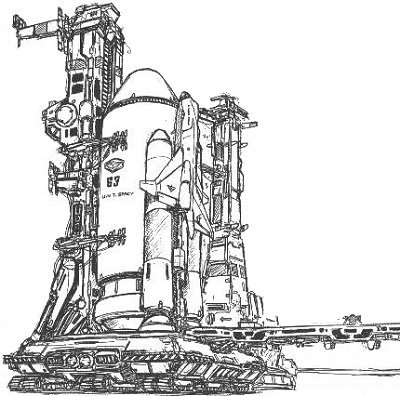

| HLV / Ginga |
|
|  | |
General and Technical Data |
|
|
Unit Type: Heavy lift vehicle Operator: Many different parties Propulsion system: rocket thrusters Hangar capacity: 1 cargo, 3 mobile suits Launch catapults: 0 Fixed armaments: none Technical and Historical Notes Small, fat transports designed for getting large amounts of cargo on and off Earth, the HLV and Ginga class transports are used by the Duchy of Zeon and Earth Federation respectively. Able to descend to Earth and land very effectively, they can be used for orbital drop maneuvers, but must then be relocated to a spaceport in order to make the trip back to Earth. |
 RPG quick stats sheet
RPG quick stats sheet